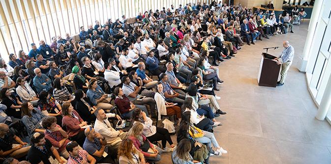
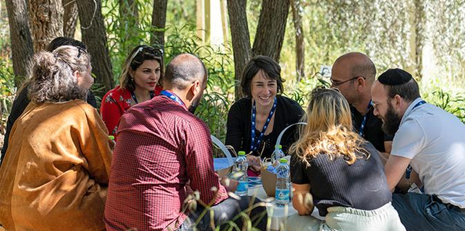
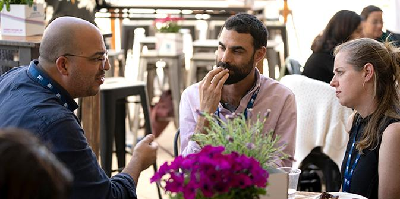
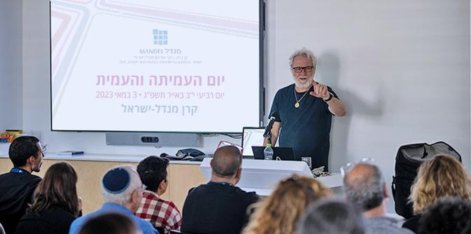

משה ויגדור, מנכ"ל קרן מנדל-ישראל (צילום: סימנים הפקות)
יום העמיתה והעמית הוא אירוע ייחודי בלוח השנה המנדלי, המפגיש את כל עמיתות ועמיתי מנדל, מכל התוכניות ומכל היחידות: בית ספר מנדל למנהיגות חינוכית, מכון מנדל למנהיגות, מרכז מנדל למנהיגות בנגב ומרכז מנדל למנהיגות בצפון. מטרת המפגש היא ליצור מרחב להיכרות בין העמיתות והעמיתים ובין עצמם, וכן עם הקרן, עם עשייתה, עם מטרותיה ועם תרומתה לחינוך, לחברה ולתרבות בישראל.
"אנחנו מנדל – מקום של חיבור, של מפגש, של הקשבה, של כיבוד הזולת, של שוויון, של אמונה ברוח האדם, של הגינות, של חשיבה ושל גשרים", בירך
משה ויגדור, מנכ"ל קרן מנדל-ישראל, את העמיתות והעמיתים.

היכרות בגן הבוטני (צילום: סימנים הפקות)
בפתיחת היום התכנסו העמיתות והעמיתים בגן הבוטני האוניברסיטאי הסמוך לבית קרן מנדל להיכרות ראשונית בקבוצות קטנות, ובמהלכה הציג כל אחד מהם את עצמו ואת התוכנית שאליה הוא משתייך. אחר כך הורחבה המסגרת לשם העמקה משותפת, בהנחיית חברי סגל ועמיתי התוכניות, במגוון של סוגיות אקטואליות לימינו ולעידן שאנו חיים בו: בינה אנושית מול בינה מלאכותית; קריאות שונות במגילת העצמאות; סוגיות של זהות ושייכות; מנהיגות נשית; וחילוניות, דתיות ומסורת.

בקבוצת דיון (צילום: סימנים הפקות)
לאחר מפגשי הלימוד המשיכו העמיתים למופעים חווייתיים: מקאם – מפגש מוזיקלי רב-תרבותי של התזמורת האנדלוסית הישראלית אשדוד בניהולו של סהר דוד – מפגש של חיבורים בין מזרח למערב, בין קודש לחול, בין חדש לישן ובין קלאסי לעממי. לחבק את הפוסט-טראומה – שיחה עם הבמאי ארי פולמן על יצירתו הקולנועית העוסקת בצומתי הכרעה מרכזיים שפקדו את החברה הישראלית מראשיתה. הריק – מפגש עם תיאטרון הקומץ – התיאטרון שנולד כתשובה לחסך התרבותי בעיר באר שבע בתקופת הקורונה ומנגיש לקהל את הטקסטים תוך זיקוקם לרמה מינימליסטית. בסוף היום שבו העמיתים והתכנסו לתוכניות האם – לאיסוף החוויות והתובנות ולשיתופן.

שיחה עם הבמאי ארי פולמן על יצירתו הקולנועית (צילום: סימנים הפקות)
בסיום היום סיכמו כמה מהעמיתים: "המפגשים בין עמיתים (וחברי סגל) היו מעניינים מאוד ותרמו תרומה משמעותית ליצירת רישות, בתוך ומחוץ למנדל, וזה משהו שצריך להמשיך לשים עליו את הדג".
עמית אחר אמר: "אני עמית בתוכנית מנדל לפיתוח מנהיגות בקהילה החרדית. בתוכנית אנו מתמקדים בנושא של סולידריות חברתית ואחריות ציבורית. אך המפגש הזה הוכיח לי עד כמה יש חשיבות למפגש ממשי במציאות. לא מספיק לדבר על אחריות וערבות הדדית, אם לא מכירים זה את פני זה. זהו הדבר שמפיל מחיצות וממיס פחדים. חייבים לעשות את זה בכל הארץ ובכל מקום..."
{kind=link}
{kind=link}
{kind=link}
{kind=link}